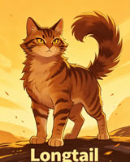
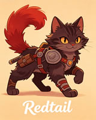
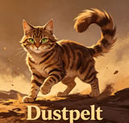
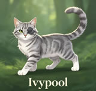
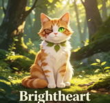
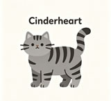

What Makes ThunderClan Special
If you've ever read the Warrior Cats books, you know ThunderClan isn't just another group of forest cats. They're the heart of the series - the clan that produced Firestar, the greatest leader any clan has ever seen. ThunderClan cats hunt in dense woodland, stalking prey through thick undergrowth with a patience that would make any ShadowClan warrior jealous.
But what really sets ThunderClan apart isn't their hunting grounds. It's their stubborn refusal to give up, even when everything looks hopeless. When the forest was being destroyed by Twolegs, ThunderClan held on longer than anyone else. When Tigerstar tried to destroy them, they fought back harder. That's just how ThunderClan rolls - they don't back down from anything.
Meet the Legendary ThunderClan Warrior Cats
ThunderClan has produced some of the most unforgettable cats in the entire Warrior Cats universe. From heroes who gave everything for their clan to villains who betrayed everything they stood for, these cats shaped the destiny of the forest. Click on any warrior below to dive deeper into their story.













ThunderClan Warrior Cats - Character Deep Dives
🔥 Fireheart - The Cat Who Changed Everything
Every ThunderClan fan has a soft spot for Fireheart. He started out as Rusty, a house cat with a collar around his neck who didn't know the first thing about hunting or fighting. Most clans would have laughed him out of the territory. But Bluestar saw something in him - that stubborn refusal to quit, that burning need to prove himself. And boy, did he prove himself. Fireheart went from being the cat everyone mocked to the greatest leader ThunderClan has ever known. His story is the ultimate underdog tale, and it's why so many readers fell in love with the series in the first place. Read Fireheart's full story →
⭐ Bluestar - Wisdom Forged Through Loss
Bluestar wasn't born a leader. She was born Bluekit, a regular ThunderClan kit who happened to have a blue-gray pelt and a lot of bad luck. She lost her mother to a WindClan raid. She lost her sister. She lost her kits when she gave them up to serve her clan. By the time she became leader, Bluestar had already given up more than most cats ever have to. That weight showed in her leadership - she was cautious, sometimes paranoid, but always deeply committed to ThunderClan's survival. Her mentorship of Firepaw was her greatest gift to the clan, even if she didn't live to see him become Firestar. Explore Bluestar's tragic journey →
🦁 Lionheart - The Deputy Who Should Have Been Leader
Lionheart was everything a ThunderClan deputy should be - brave, fair, fiercely loyal, and genuinely kind. His golden tabby pelt and thick mane made him look every bit the warrior he was. When he died defending the camp from ShadowClan, ThunderClan lost more than a deputy. They lost the cat who could have been their next great leader. Fireheart never forgot Lionheart's mentorship, and neither have the fans who still rank him among the most beloved cats in the series. Discover Lionheart's legacy →
🌪️ Sandstorm - From Bully to Beloved
Sandstorm's character arc is one of the most satisfying in the entire series. When we first meet her as Sandpaw, she's basically ThunderClan's mean girl - mocking Firepaw's kittypet origins, teaming up with Dustpaw to make his life miserable, and generally acting like she's better than everyone else. But somewhere along the way, she started seeing Firepaw differently. She saw his courage. She saw his loyalty. And she realized she'd been wrong about him. Their slow-burn romance, built on mutual respect rather than instant attraction, feels more real than most fictional relationships. Read Sandstorm's full story →
🐅 Tigerpaw - How a Hero Became a Villain
Tigerpaw's story is a masterclass in how nature and nurture can combine to create a monster. Born to Pinestar (who abandoned ThunderClan to become a kittypet) and Leopardfoot, Tigerpaw never had a chance at a normal life. His mentor Thistleclaw fed his ambition and cruelty, teaching him that mercy was weakness and that power was the only thing worth pursuing. By the time Tigerpaw became Tigerclaw, the damage was already done. Understanding his origin doesn't excuse his crimes, but it does make him one of the most complex villains in children's literature. Explore Tigerpaw's dark origin →
🐈 Longtail - Proof That Cats Can Change
Longtail started out as the cat everyone loved to hate. He mocked Firepaw's collar. He challenged him to a fight on his first day. He made it his personal mission to make the kittypet apprentice miserable. But Longtail's story didn't end there. Over time, he realized he'd been wrong about Fireheart. He distanced himself from Darkstripe's treachery. He served ThunderClan faithfully as a warrior and eventually as an elder. His redemption arc reminds us that first impressions aren't always right, and that even the biggest jerks can become decent cats if given the chance. Read Longtail's redemption story →
What ThunderClan Warrior Cats Stand For
Every clan in the Warrior Cats series has its own identity. RiverClan cats are proud and swim like fish. WindClan cats are fast and value their freedom. ShadowClan cats are... well, they're ShadowClan. But ThunderClan has always been the moral center of the forest, the clan that other cats look to when things get really bad.
The ThunderClan Way
ThunderClan cats don't just follow the warrior code - they believe in it. They protect the weak, defend their territory with everything they've got, and never abandon a clanmate in need. When Fireheart chose to feed RiverClan during a harsh leaf-bare, other cats called him soft. But ThunderClan cats understood that compassion wasn't weakness - it was strength.
Why ThunderClan Territory Shapes Their Cats
ThunderClan's territory is thick forest, full of dense undergrowth and hidden places. Their cats learn to be patient hunters, waiting silently for prey to come within reach. They learn to use cover, to stalk, to strike without warning. These skills translate directly into their battle tactics. A ThunderClan warrior in their home territory is nearly impossible to spot until it's too late.
The Story of ThunderClan Warrior Cats
ThunderClan's history goes all the way back to the dawn of the clans. Founded by Thunder, the son of Clear Sky and Storm, ThunderClan was built on the principles of courage and protection. Thunder chose the forest as his home because it offered the best defense for his cats - thick brambles, tall trees, and plenty of places to hide from enemies.
The Golden Age of Firestar
No discussion of ThunderClan history is complete without talking about Firestar's leadership. When he took over from Bluestar, ThunderClan was struggling. They'd lost territory, respect, and warriors. Firestar changed all of that. He built alliances with WindClan and RiverClan. He defeated Tigerstar's schemes. He led the Great Journey when Twolegs destroyed the forest. Under his leadership, ThunderClan became the strongest clan in the forest, a position they held for generations.
The Cats Who Made ThunderClan Great
Beyond the leaders, countless ThunderClan warriors shaped the clan's destiny. Redtail gave his life defending the clan's honor. Darkstripe showed how betrayal could come from within. Daisy proved that kittypets could become valued clan members. Millie demonstrated that love could cross any boundary. Briarpaw taught the clan that physical limitations don't define a warrior's spirit. Cloudtail showed that questioning tradition can be a form of strength. Brightheart proved that scars don't define what a cat can become. And the next generation - Jayfeather, Lionblaze, Squirrelflight, and Cinderheart - carried Firestar's legacy forward into a new age of prophecy and change.
ThunderClan Territory and Camp
ThunderClan's home is the dense forest territory, a land of towering oaks, thick brambles, and hidden ravines. Their camp sits in a natural hollow, protected by walls of thorn and gorse that make it nearly impossible for enemies to breach. The nursery is tucked away in the safest corner, while the warriors' den sits closest to the entrance so fighters can respond to threats immediately.
Hunting in ThunderClan Territory
ThunderClan cats are stalkers. They don't chase prey down like WindClan or fish like RiverClan. They wait, motionless, for the perfect moment to strike. Mice, voles, squirrels, and the occasional bird make up their diet. The forest provides plenty of cover, but it also means ThunderClan cats need to be patient - sometimes waiting in one spot for what feels like forever.
The Thunderpath Danger
No discussion of ThunderClan territory is complete without mentioning the Thunderpath - the monster road that cuts through their land. Countless cats have been killed by the roaring monsters that travel it. Yet ThunderClan cats have learned to cross it when necessary, proving their adaptability and courage. The Thunderpath is part of the ever-present danger that comes with living so close to Twolegs.
The Greatest Leaders of ThunderClan Warrior Cats
ThunderClan has been blessed with remarkable leaders throughout its history. Each one brought something unique to the role, shaping the clan in their own image. Here are the three who left the deepest marks:
Bluestar
The wise leader who guided ThunderClan through its darkest hours. Her sacrifice saved Fireheart and cemented her place among the greatest ThunderClan leaders. Read more →
Firestar
The former kittypet who became ThunderClan's greatest leader. His courage, compassion, and unwavering loyalty defined an era of prosperity. Read more →
Lionheart
The noble deputy who embodied everything ThunderClan stands for. His death was a devastating blow, but his legacy lives on in every warrior he trained. Read more →
Explore More Warrior Cats Content
Love ThunderClan Warrior Cats? There's plenty more to discover:
- Clan Name - Build your own warrior clan with the Clan Name generator
- Warrior Cats Name Generator - Create your own Warrior Cats name
- About Us - Learn more about our Warrior Cats fan community
- Fireheart Warrior Cats - The legendary leader's full story
- Tigerpaw Warrior Cats - The villain's dark origin